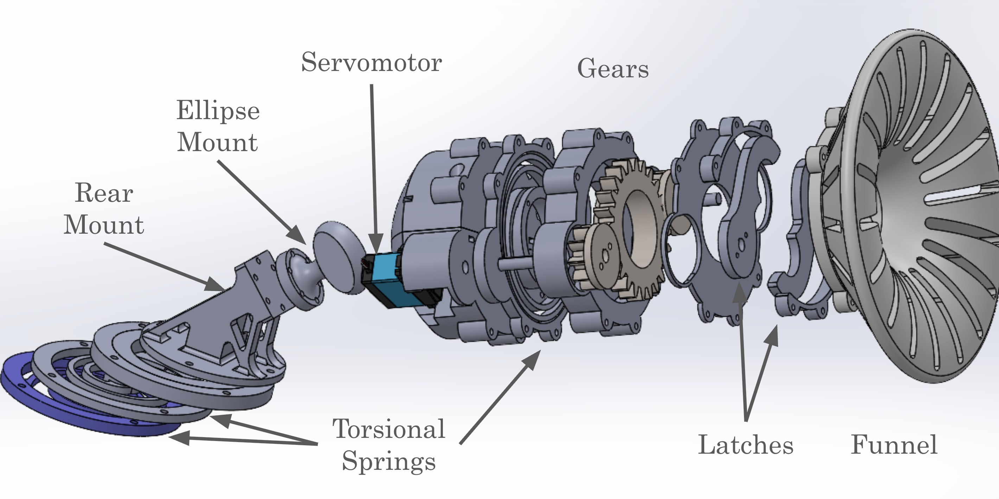

← Back to Projects
Lunar Rover & Docking System — Structural Design
Jan 2025 – Now · University of Pennsylvania
SolidWorks
ANSYS
GD&T
Tolerance Stack-up
FEA / Modal
6061-T6 / PA12
CNC machining
3D printing
DFM / Assembly
Gallery


Overview
- Chassis design: Lightweight box-frame in 6061-T6 with local ribs. Payload target 60 kg.
- Turret mechanism: Spiral-Zipper yaw/pitch unit with latched docking and customized 3D printed torsion spring.
- Interfaces: Standardized mounting flanges; key fits held to ±0.2 mm for turret–base alignment.
- Materials & process: CNC-machined aluminum plates + printed PA12 / ABS fixtures.
- Documentation: Exploded views, BOM, and assembly notes for quick swap and maintenance.
Validation
- FEA (linear): Static checks under 3 g ground impact. Max stress < yield; SF ≥ 1.8.
- Modal: First mode > 35 Hz to avoid operational vibration coupling.
- Tolerance stack-up: Docking latch repeatability within ±0.2 mm at critical datums.
- Field tests: Multiple terrain trials; turret lock remains secure after repeated docking cycles.
Manufacturing Notes
- Mixed process: water-jet blanks → CNC finish → deburr → anodize (select parts).
- Printed PA12 /ABS jigs for wire-routing and sensor guards; quick to replace.
- Fastener strategy: M6/M8 class 8.8; turret flange torque 15 N·m.
My Role
- Led chassis layout, turret mechanism, and mounting interfaces.
- Built exploded assemblies, BOM, and shop drawings with GD&T.
- Ran FEA/modal pre-checks and coordinated fabrication and fit-up.